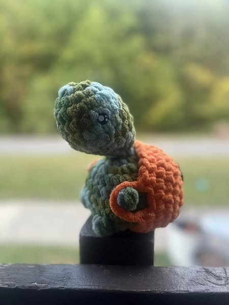

How to Crochet a Turtle
- Gather Materials: Collect yarn, a crochet hook, stuffing, scissors, safety eyes, and yarn in green (body), brown (shell), plus stitch markers and fluff.
- 1:MR 8SC
- 2:(INC) X8[16]
- 3:(3SC,INC)X4[20]
- 4-6:20SC[3 Rounds]
- 7:4SC (DEC,SC)X4, 4SC[16] insert safety eyes on row 5-6 7ST apart.
- 8:4SC,4DEC,4SC[12]
- 9:(1SC,DEC)X4 [8]
- 10:8SC[1 round]
- 11:INCX8 [16]
- 12:(1SC,INC)X8 [24]
- 13:(2SC,INC)X8 [32]
- 14:12SC,BO,9SC,BO,9SC [32]
- 15-16:32SC [2 rounds]
- 17:14SC, BO,7SC,BO,9SC [32]
- 18:(DEC, 2SC)x8 [24]
- 19:(DEC, 1SC)x8 [16]
- 20:(DEC)x8 [8]
- Final Touches: Fluff, adjust, and inspect your crochet turtle so that every detail is just right.
Enjoy your crafting journey and happy crocheting!
Abbreviations
- MR = Magic Ring
- ST = Stitch
- SC = Single Crochet
- CH = Chain
- INC = Increase
- DEC = Decrease
- BO = Bobble Stitch
- FO = Fasten Off